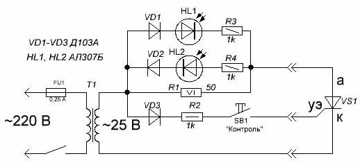
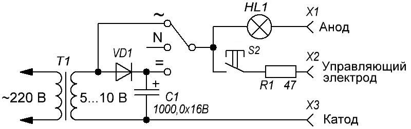
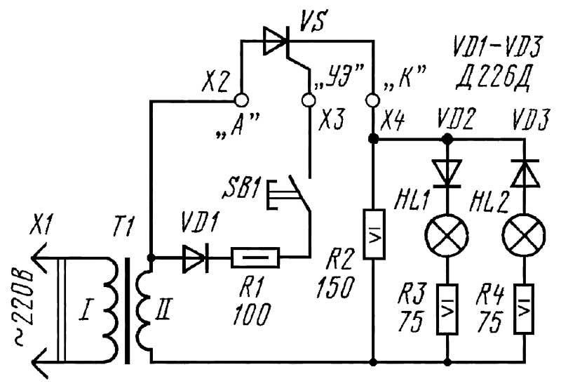
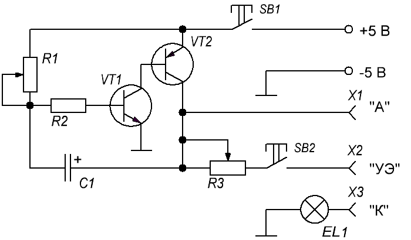
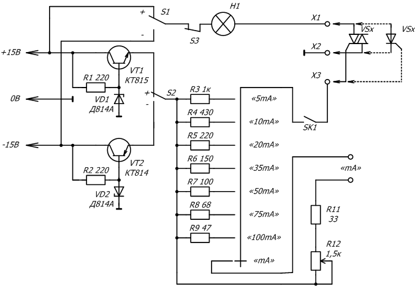
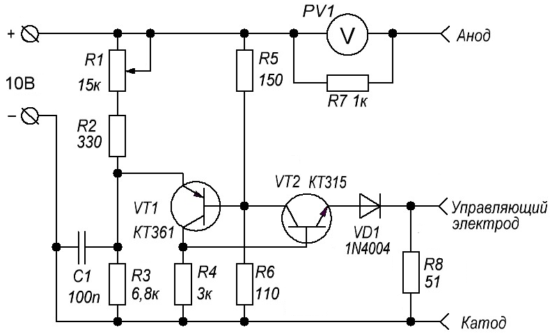

Приборы для проверки исправности тиристора
Прибор для проверки исправности тиристора (вариант 1)

Рис. 1 - Схема прибора для проверки исправности тиристора (вариант 1)
Прибор проверки тиристора (рис. 1) питается от сети переменного тока через понижающий трансформатор Т1. Нажатием на кнопку SB1 «Контроль», определяется исправность или неисправность тиристора, в соответствии с таблицей 1.
Таблица 1
| HL1 | HL2 | Состояние |
|---|---|---|
| горит | не горит | Исправен |
| горит | горит | Пробит |
| не горит | не горит | Обрыв |
В приборе для проверки тиристора применены резисторы МЛТ, причем резистор R1 составлен из трех резисторов МЛТ-2 сопротивлением по 150 Ом, соединенных параллельно. Диоды кремневые маломощные на рабочее напряжение более 30 В. В качестве понижающего трансформатора подойдет любой, мощностью более 10 Вт и напряжением на вторичной обмотке 22…27 В.
Прибор для проверки исправности тиристора (вариант 2)

Рис. 2 - Схема прибора для проверки исправности тиристора (вариант 2)
Схема состоит из:
- трансформатора, который выдает нам на выходе 5-10 В.
- диод Д226, ну что было под рукой. Можно использовать любой маломощный.
- электролитический конденсатор на 1000 мкФ х 25 В.
- тумблер (S1) на три положения, одно из которых нейтрально (N).
- кнопочка с возвратом (S2).
- резистор на 47 Ом.
- лампочка накаливания на 6,3 В.
Схема работает следующим образом:
- Подключаем проверяемый тиристор Т1 к проводам схемы.
- Переключаем тумблер S1 с нейтральным положением на значок "~", нажимаем кнопочку S2.
- Лампочка при нажатии загорается, при отпускании тухнет.
Таким образом мы проверили тиристор на переменном токе.
- Ставим тумблер S1 в положение "="
- Нажимаем кнопку S2, лампочка зажигается, отпускаем кнопку S2, лампочка все равно продолжает гореть.
Так мы проверили тиристор на постоянном токе.
Если все операции прошли успешно, значит тиристор исправен.
Прибор для проверки исправности тиристора (вариант 3)

Рис. 3 - Схема прибора для проверки исправности тиристора (вариант 3)
Прибор (рис. 3) питается от сети переменного тока через понижающий трансформатор Т1. Переменное напряжение вторичной обмотки трансформатора подается на зажим Х2, к которому подключают вывод анода тринистора. Одновременно через диод VD1, резистор R1 и кнопочный выключатель SB1 к зажиму ХЗ, с которым соединяют вывод управляющего электрода тринистора, поступают положительные полупериоды переменного напряжения (конечно, при нажатой кнопке выключателя).
Если тринистор исправный, он откроется и зажжется лампа HL1. Если лампа зажжется до нажатия на кнопку, это укажет на дефект тринистора — замыкание в цепи его управляющего электрода. Если одновременно зажигаются лампы HL1 и HL2, значит испытываемый тринистор пробит. Ни одна из ламп не зажжется в случае другой неисправности — внутреннего обрыва.
Каждый из резисторов R2—R4 можно составить из трех параллельно соединенных резисторов МЛТ-2 сопротивлением в 3 раза большим, чем указано на схеме. Диоды можно заменить любыми другими, рассчитанными на ток не менее 300 мА. Сигнальные лампы — на напряжение 6,3 В и ток накала 0,28 А (МН 6,3-0,28). Вместо них можно использовать лампы на напряжение 26 В, исключив резисторы R3, R4.
В качестве понижающего подойдет унифицированный выходной трансформатор кадровой развертки телевизоров ТВК-110Л.
При напряжении сети 220 В на его вторичной обмотке будет напряжение около 25 В. Можно использовать самодельный трансформатор, выполнив его на магнитопроводе сечением около 5 см2. Обмотка I должна содержать 2200 витков провода ПЭВ-1 0,2, обмотка II — 250 витков ПЭВ-1 0,5.
Кстати, этим пробником можно проверять диоды, рассчитанные на ток не менее 0,3 А. Вывод анода диода подключают к зажиму Х2, а вывод катода—к зажиму Х4. При исправном диоде зажжется лампа HL1 (либо HL2, если изменена полярность подключения выводов диода). Если диод пробит — горят обе лампы, а при внутреннем обрыве не зажигается ни одна из них.
Прибор для проверки исправности тиристора (вариант 4)
Несмотря на свою простоту, тестер (рис. 4) позволяет проверить практически любой популярный тиристор как малой, так и большой мощности, причем встроенный в схему генератор поможет не только оценить работу полупроводникового прибора в режиме ключа, но и примерно оценить его частотные характеристики.

Рис. 4 - Схема прибора для проверки исправности тиристора (вариант 4)
Таблица 2
| Обозначение | Наименование | Номинал | Количество | Примечание |
|---|---|---|---|---|
| С1 | Конденсатор электролитический | 5 мкФ/16В | 1 | К50-6 |
| EL1 | Лампочка накаливания | 2,5 В/0,2А | 1 | 2,5 – 6,3 В/0,1 – 0,3 А |
| R1 | Резистор переменный | 220 кОм | 1 | СП1-В, СП2-2-10 |
| R2 | Резистор постоянный | 1 МОм | 1 | |
| R3 | Резистор переменный | 2,2 кОм | 1 | СП1-В, СП2-2-10 |
| SB1, SB2 | Выключатель | 1 | ||
| VT1 | Биполярный транзистор | КТ312(А-В) | 1 | КТ315(А-В), МП111 |
| VT2 | Биполярный транзистор | КТ361(А-Г) | 1 | КТ3107(А-Ж), КТ502(А-В), МП25(А-Б). |
Для того, чтобы не паять тиристор, предусмотрены три разъема Х1, Х2 и Х3 произвольного типа, к примеру три зажима типа «крокодил» на гибких выводах. Генератор собран на транзисторах VT1 и VT2 разной проводимости, частота генерации может изменяться в пределах 0,1 – 100 Гц переменным резистором R1. Резистор R3 служит для регулировки уровня управляющего напряжения, что позволяет проверять тиристоры любой мощности, а значит, и с разным напряжением открывания. Нормальное положение движка этого резистора – на максимальном сопротивлении (крайнее левое положение).
Проверка тиристора проводится в два этапа. Сначала тиристор подключается к тестеру согласно схеме и нажимается кнопка SB1. Исправный тиристор светиться не будет – испытание на пробой прошло успешно. После этого дополнительно нажимают на кнопку SB2, подавая сигнал с генератора на управляющий электрод. По миганию или мерцанию лампы, частота которых зависит от положения движка резистора R1 можно судить об исправности тиристора и его частотных характеристиках. Если тиристор имеет относительно высокое открывающее напряжение, для открывания прибора, возможно, придется увеличить это напряжение, подстроив резистор R3.
Источник питания – любой нестабилизированный с напряжением 5-10 В и выдерживающий ток 200-300 мА.
Таким прибором можно проверить тиристоры КУ101, 201, 221, 202, Т10-160, Т122-10, Т15, Т161, Т16, Т112, Т222, Т235 и другие.
Прибор для проверки исправности тиристора (вариант 5)
Прибор (рис. 5) предназначен для проверки работоспособности тиристоров и симисторов, он может приблизительно определить ток открывания управляющего электрода, а также способность открываться тиристоров, и для симисторов способность открываться при различных полярностях коммутируемого и управляющего напряжений. А так же на наличие пробоя.

Рис. 5 - Схема прибора для проверки исправности тиристора (вариант 5)
Для работы данного устройства требуется источник двуполярного напряжения ±12…17 В, можно не стабилизированный. Контрольным устройством, регистрирующим открывание тиристора (симистора) служит автомобильная лампа накаливания напряжением 12 В и мощностью 4 Вт.
Переключатель S1 служит для выбора полярности коммутируемого тока, а переключатель S2 для выбора полярности управляющего тока. Кнопка S3 — размыкающая, при нажатии на неё ток через испытуемый тиристор (симистор) прекращается и он переходит в закрытое состояние. Кнопка SK1 служит для подачи управляющего тока на управляющий электрод. При помощи переключателя S4 можно ориентировочно определить ток отпирания, — постепенно переключать его от минимального тока к максимальному, пока не загорится лампа, на каком положении S4 это произошло, такой и будет ток отпирания управляющего электрода.
Для точного определения тока отпирания необходим мультимитер, переключенный на предел «200 mA», мультиметр подключают к клеммам «mА», затем переводят S4 в положение «mА», и нажав кнопку SK1 перемещают движок переменного резистора R12 от положения максимального сопротивления к минимальному, наблюдая за лампой Н1 и показаниями мультиметра. Ток при котором лампа зажглась и есть отпирающий ток управляющего электрода.
На транзисторах VT1 и VT2 выполнены параметрические стабилизаторы управляющего тока.
Испытуемые тиристоры и симисторы подключаются к клеммам Х1-ХЗ при помощи проводов с наконечниками типа «Крокодил».
Переключатели S1 и S2 – микро тумблеры, S3 — П2К с удаленным фиксатором (используются размыкающие контакты), SK1 — П2К с удаленным фиксатором (используются замыкающие контакты). S4 — круговой приборный переключатель на восемь положений (1Н8П). Вместо автомобильной лампы можно использовать любую другую лампочку на 12-14 В и ток 0,2-1 А.
Прибор для проверки исправности тиристора (вариант 6)
Пробник тиристоров (рис. 6) состоит из генератора импульсов на двух транзисторах с изменяемой (переменным резистором) скважностью, которые подаются через диод на управляющий электрод тиристора, тем самым изменяя угол его открытия, а следовательно и проходное сопротивление, которое вместе с резистором R7 образует регулируемый делитель напряжения.

Рис. 6 - Схема прибора для проверки исправности тиристора (вариант 6)
Для проверки подключаем тиристор и, вращая ручку переменного резистора наблюдаем за показаниями вольтметра. Если напряжение изменяется от 0 до 10 В плавно - то тиристор в рабочем состоянии, если скачкообразно или вообще не регулируется - тиристор неисправен. Можно проверять отечественные тиристоры КУ101, КУ112, КУ201, КУ202.
Источники:
ruselectronic.com - Как проверить тиристор мультиметром
ruselectronic.com - Прибор для проверки тиристоров
tehnoobzor.com - Проверка тиристора
nice.artip.ru - Тестер для проверки тиристоров